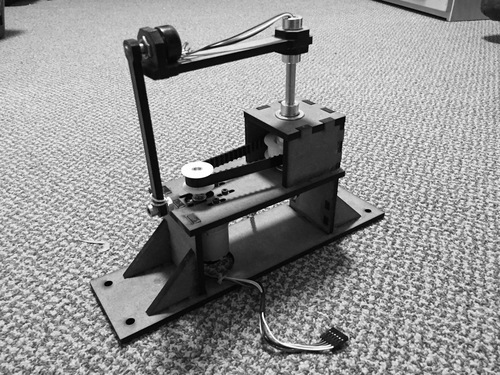
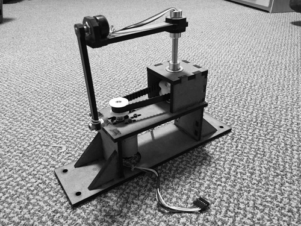
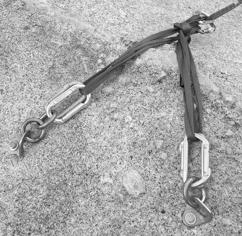
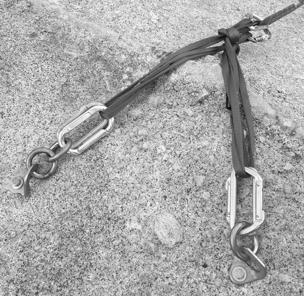

Evan Dorsky
- Olin College Electrical and Computer Engineering
- Apple Hardware System Integration Engineer
- San Francisco


 


Smart Outlet
I worked on a team of Olin students with Ivani, an IoT startup. We explored new markets for their low-power presence sensing technology, developed a prototype of an outlet-based power monitor, and filed a provisional patent.
Spaceteam Penny Arcade
I worked on a team to build an arcade cabinet based on the cooperative smartphone game Spaceteam. Each player receives commands at their console, which has a suite of buttons, switches, and sliders. Many commands received at one console can only be completed at another. Players must communicate these commands to each other (often by shouting) to pilot their spaceship for as long as they can.
Inverted Pendulum
I worked with a partner to design a rotary inverted pendulum.
Stereo Audio Amplifier


Squirrel
Dollar Koi Fish
New Kawasaki Rose
 


Climbing
Fire Arts
Backpacking
Practical EE
Olin.js
Controls
Circuits
Principles of Engineering
Intro EE Courses